What Servant does
Five tabs cover everything: Home for channels, DMs for direct messages, Agent for your private chats with the agent, People, and You.

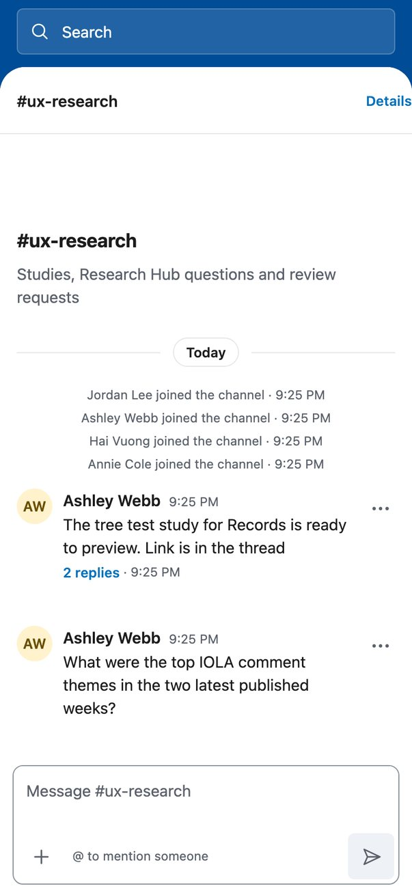
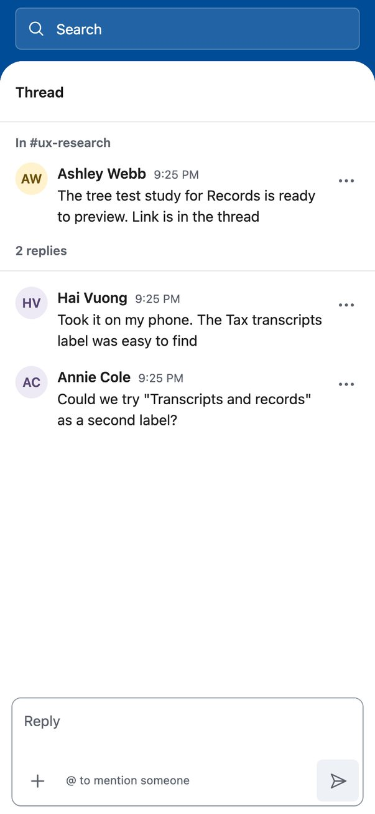
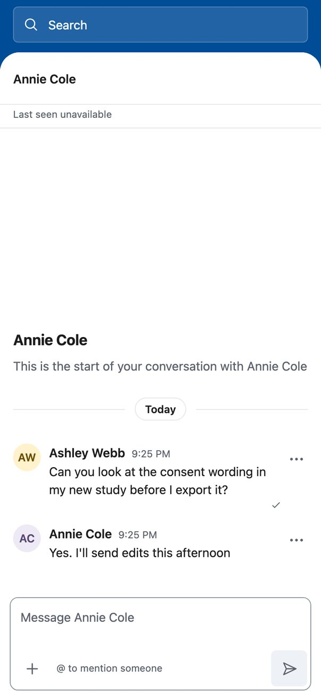
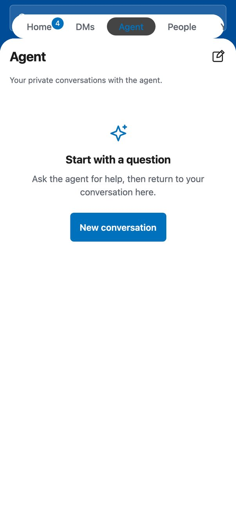
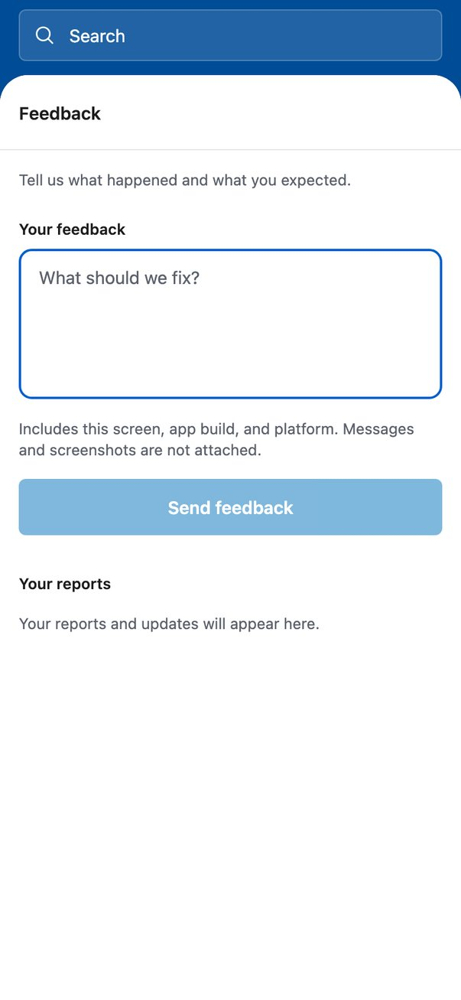
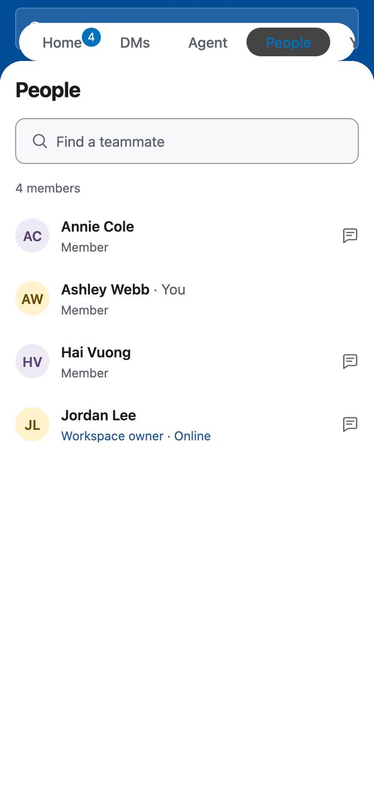
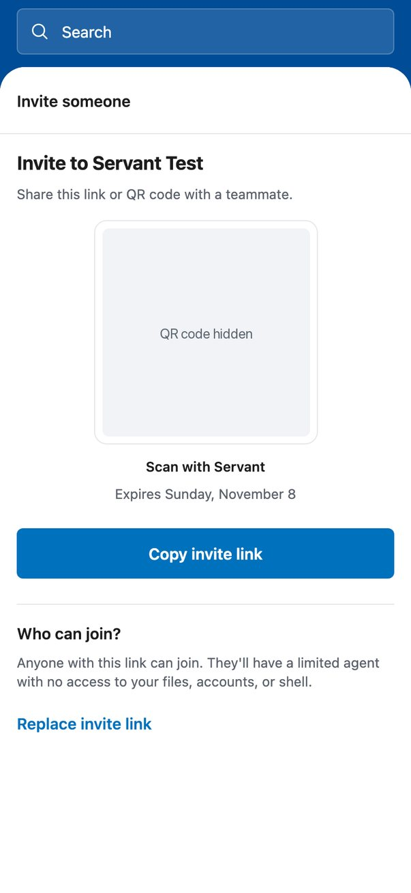

Your first ten minutes
Everyone does these, whatever your role.
- Install Servant. iPhone: accept the TestFlight invite. Android: accept the Firebase App Distribution email.
- Join your team's server. Open the invite link or scan the QR code you were sent, then type your name.
- Join your channels. On Home, tap Browse and join #general plus the channels for your work, such as #ux-research, #design-reviews or #testing.
- Say hello in #general. It's the quickest way to check everything works.
- Ask the agent something. Open the Agent tab, tap New chat and try one of the prompts below.
- Try a report. Shake your phone once. Cancel it, or tell us what confused you.
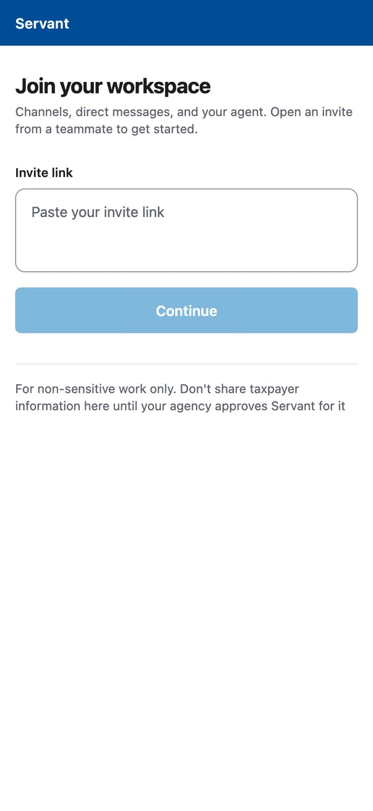
Jira tickets
The agent can't reach IRS Jira, so it drafts the ticket and you file it. Once the ticket is in Jira, the rest is automatic.
- Ask the agent for a draft. Describe the problem in an Agent chat, or type @agent in the thread where it came up. Attach a screenshot if you have one.
- Paste it into Jira. Create the ticket in project TXE and copy in the summary and description. Add the screenshot yourself, because attachments don't carry over.
- Engineering picks it up. When the ticket is in Backlog, Selected for Development, To Do or In Progress, it appears as a GitHub issue in expo-irs within 15 minutes, labelled with its TXE number.
- QA gets it back. When the pull request that fixes the issue is merged, the ticket moves to Ready for QA and is assigned to the QA tester.
A draft looks like this:
Summary: Notices tab shows English date in Spanish
Steps to reproduce
1. Set the phone language to Spanish
2. Open the IRS app and sign in
3. Open Notices
Expected: dates read "3 de noviembre de 2026"
Actual: dates read "November 3, 2026"
Build: 2026110207 · iPhone 15, iOS 26.1
Screenshot: attachedGo deeper for your role
Pick your role. Servant remembers your choice on this device.
Developers
Servant has three parts: an Expo app, a small Node server on the owner's Mac, and the Hermes agent behind it. The phone talks to the server through an encrypted relay.
Phone (Servant app)
│ app-to-Mac encryption inside HTTPS
▼
Relay or tunnel ──▶ Server (server/, on the Mac) ──▶ Agent (Hermes, localhost only)Get the code running
git clone https://github.com/slavingia/servant.git
cd servant
node --test server/ # server tests, temporary databases and a fake agent
cd app && npm ci
npm test && npm run typecheck && npm run lintTest on your own server, never the real one
All manual testing happens on an isolated test server with its own data, keys and port. A different account on the real server still changes real data.
node scripts/test-instance.mjs init
node scripts/test-instance.mjs start # http://127.0.0.1:8788
node scripts/test-instance.mjs invite --name 'QA Owner' --role owner
node scripts/test-instance.mjs invite --user <existing-id> # second device, same personRead next
docs/testing.mdfor the test server and what it can't do (no agent, no push)docs/deployment.mdfor staged releases, the worker and rollbackdocs/agent-turns.mdfor Stop, approvals and how replies survive a locked phonedocs/encryption.mdanddocs/ato-data-flows.mdfor the security boundary
Functional testers
You get new builds automatically through TestFlight on iPhone and Firebase App Distribution on Android. Both platforms ship with the same build number, so say which number you're on when you report something.
What to check on each new build
- Join with an invite link and with a QR code
- Post in a channel, reply in a thread and react to a message
- Send a DM and watch Sent change to Read
- Attach a photo, a video and a file. Up to four files at once
- Ask @agent in a thread, then lock your phone and reopen. The reply should still arrive
- Start an agent chat and tap Stop partway through
- Swipe left on a DM to archive it, then find it under Archived
- Turn on airplane mode, send a message, turn it off. The draft should not be lost
- Repeat a few screens in dark appearance and at a large text size
Reporting a bug
Shake the phone or take a screenshot on the screen that's wrong. Say what you did, what you expected and what happened. The screenshot and your build number go with the report. For the IRS app, file the bug in Jira so it reaches engineering. See Jira tickets.
UX designers
Servant's visual rules live in docs/design-system.md. The essentials:
- A navy band (
#0A2240) at the top with a white status bar - Buttons in IRS blue (
#0071BC) with white labels, never white or light blue on navy - Tab titles left-aligned, 20pt in from the edge, with no Back button
- Pushed screens have a centred title and Back at 20pt
- Buttons say what they do in plain words. No icon when the word is obvious
- Destructive actions are a red link (
#D11242)
Proposing a change
- Post the idea in #design-reviews with a capture of the screen as it is today
- For a web prototype, use the design-prototypes repository and start from
components/starter.html - Show real captures in light and dark, at the same screen size, before and after
- Tag content and research in the thread for wording and evidence
UX content strategists
Every word in Servant is in the screen files under app/src/app/, for example invite.tsx or welcome.tsx. Ask the agent to find a string and it will show you the file and line.
House style
- Plain and letter-like. Spell out one to nine
- Sentence case for headings and buttons
- No full stop at the end of a one-sentence line
- Say "server", never "hub"
- Settings rows: the label is the thing you turn on, with a one-line subtitle that fits a 375pt screen in English and Spanish
- For IRS products, say "the IRS app", never "IRS2Go"
How content reviews reach you
When an automated UX Research review finds a wording problem in a prototype, it tags you on GitHub with the finding, its priority and a link to the evidence. Reply on the issue or in #design-reviews.

UX researchers
You'll mostly use three places, and Servant ties them together.
- Research Hub (private): past study reports and the survey research catalog
- Research Studio: build and run unmoderated studies in the browser
- design-prototypes: prototypes, published reviews and the research insights dashboard
- 1Query the Research HubFind studies and survey evidence
- 2Build a studyResearch Studio, start to finish
- 3Add data and dashboardsNew releases and new pages
- 4Update a dashboardRefresh, check, publish
- 5Automate reviewsAnd tag people for feedback
1Query the Research Hub on GitHub
The Hub holds two kinds of evidence. Past study reports live under research/, one folder per study. The survey research catalog in survey-research-catalog/ holds approved survey aggregates and comments for six products: the IRS app, Where's My Refund, Tax Pro Account, Individual Online Account, Business Tax Account and IRS.gov.
Find studies and files with the GitHub CLI
# Browse the study folders
gh api repos/Taxpayer-Services-and-Online-Accounts/research-hub/contents/research --jq '.[].name'
Accessibility Program
Business Tax Account
Campus Roadshow Focus Groups
Digital comms
Direct File …
# Search the whole Hub for a phrase
gh search code "payment plan" --repo Taxpayer-Services-and-Online-Accounts/research-hub
survey-research-catalog/data/products/irs_app/2026-10-08/dim_code.csv
survey-research-catalog/data/products/iola/2026-10-09_v1.0-rc3-conditional/dim_code.csv …
# See what's being added or discussed
gh pr list -R Taxpayer-Services-and-Online-Accounts/research-hubAsk the survey catalog a question
Build the catalog once on your computer. It needs Python 3 (the README asks for 3.12) and takes about 15 seconds.
gh repo clone Taxpayer-Services-and-Online-Accounts/research-hub
cd research-hub/survey-research-catalog
python3 catalog/build_catalog.py --canonical --database research_catalog.sqlite
python3 catalog/validate_catalog.py --database research_catalog.sqlite
VALIDATION: PASS
# Start with the guarded workflows
python3 catalog/query_catalog.py --list-workflows
catalog-status evidence-freshness rating-trends feature-requests technical-bugs
segment-breakdown period-comparison search-comments top-recent-themesExample: what were the top comment themes for the Individual Online Account in the two latest published weeks?
python3 catalog/query_catalog.py --database research_catalog.sqlite --top-recent-themes iola --periods 2
1 Refund, return, case, and processing status 1058
2 Help, contact, escalation, and virtual assistance 566
3 Navigation, search, content clarity, and guided use 503
4 Payments, balances, payment plans, and offers… 456
Weeks 2026-09-26 to 2026-10-09 · CONDITIONAL_PASS_RC3More examples:
# Monthly rating trends, complete months only
python3 catalog/query_catalog.py --database research_catalog.sqlite \
--workflow rating-trends --product wmr --grain month --complete-only --format json
# Bounded comment search: needs a product and a date range, returns at most 50 short excerpts
python3 catalog/query_catalog.py --database research_catalog.sqlite \
--search-comments "refund status" --product iola --from-date 2026-10-02 --to-date 2026-10-15survey-research-catalog/AGENTS.md.2Build a study in Research Studio
Research Studio runs prototype usability tests, A/B tests, card sorts, tree tests, first-click tests, preference tests and surveys, alone or in one study. It runs in the browser with nothing to install.
Build it
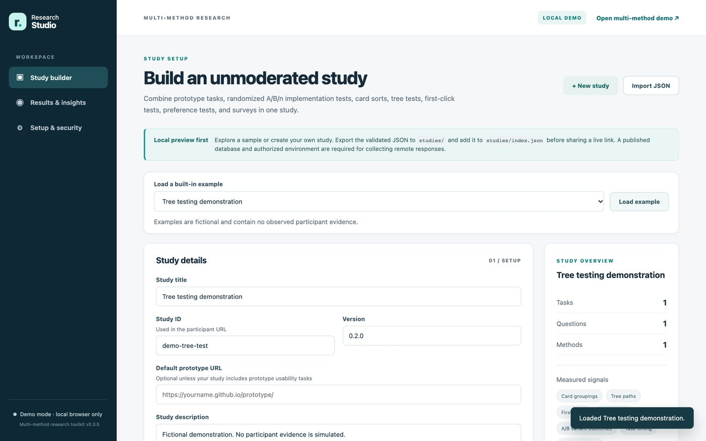
- Open Research Studio. It starts on Study builder.
- Select + New study, or pick a built-in example and select Load example to change it.
- Fill in the title, a study ID (lowercase letters, numbers and hyphens), the welcome text and the consent statement.
- Under activities, choose a method and select Add activity. Each method has its own settings.
- Add questions before the activities, after each one, or at the end.
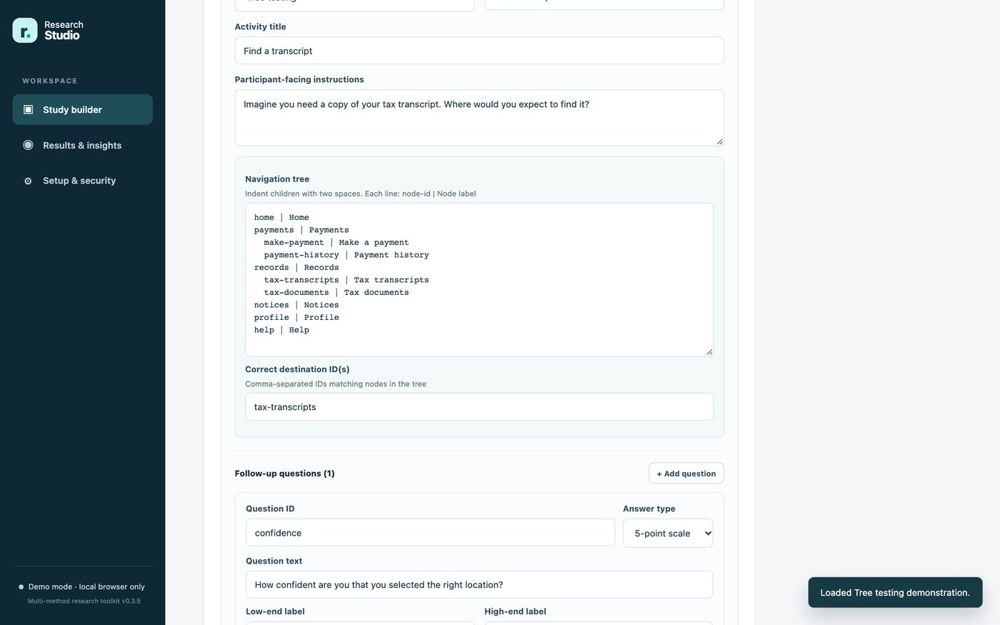
A tree test's menu is written one item per line, indented two spaces per level:
payments | Payments
make-payment | Make a payment
payment-history | Payment history
records | Records
tax-transcripts | Tax transcriptsThen set the correct destination, here tax-transcripts. Participants never see it.
Preview it as a participant
Select Preview locally to take it yourself in a new tab. Previews are labelled and kept out of your results. It works on a phone too.
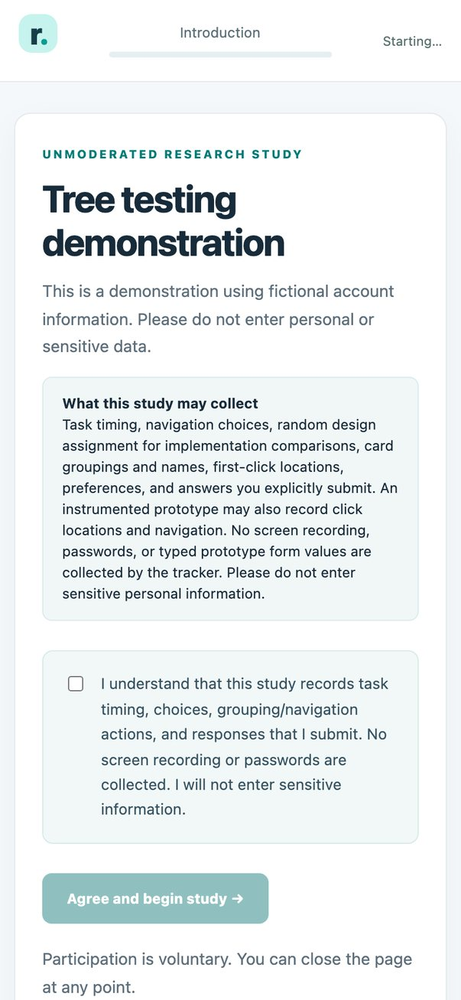
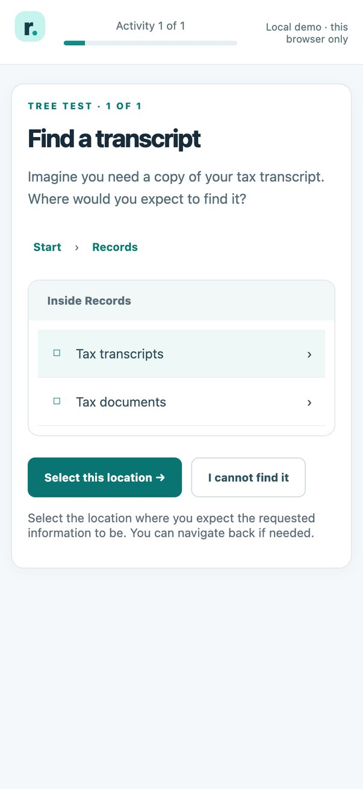
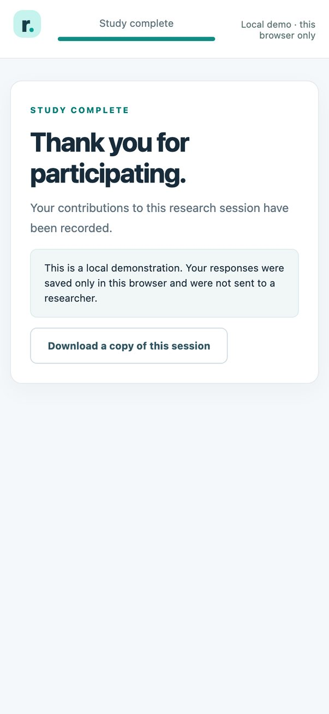
Save it and publish it
- Select Export study JSON. Keep the file: drafts aren't saved when you close the tab. Import JSON loads it again.
- To put it on the live site, add the file to the
studies/folder, add a line tostudies/index.json, and push.
gh repo clone ash-webb/research-studio && cd research-studio
cp ~/Downloads/records-tree-test.json studies/
# add {"id": "records-tree-test", "title": "…", "config": "studies/records-tree-test.json"} to studies/index.json
npm test
git add studies && git commit -m "Add records tree test" && git pushThe site republishes in a minute or two. The participant link is https://ash-webb.github.io/research-studio/study.html?study=records-tree-test. Only invited collaborators can push.
See results
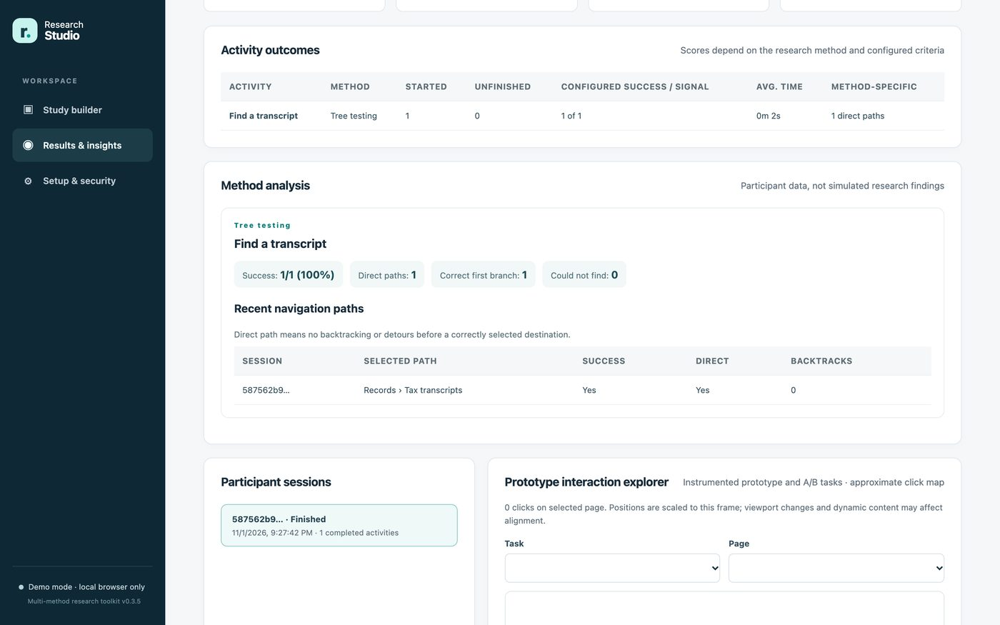
Open Results & insights and choose the study. You'll see sessions, success per activity, an analysis for each method and each participant's path. Download CSV or JSON for Excel or Power BI. While it's a demo, results only include studies taken in the same browser.
3Add new data and create a dashboard
Adding a new data release to the Research Hub
Each survey export becomes a release folder in the catalog. A release isn't usable until its approvals are recorded, and the build refuses anything that doesn't match.
- Create
survey-research-catalog/data/products/<product>/<release>/with the approved CSV partitions,catalog_manifest.jsonandrelease_manifest.csv. Copy an existing release for the file layout. - Record the decision in
metadata/decisions/. If comment text will be searched, add its approval tometadata/comment_text_analysis_approvals.json. - Add the release to
catalog/canonical_source_set.jsonand update the expected counts. - Build, validate and test. All three must pass.
- Open a pull request on research-hub and ask the catalog owner to review.
git switch -c add-<product>-<release>
python3 catalog/build_catalog.py --canonical --database research_catalog.sqlite
python3 catalog/validate_catalog.py --database research_catalog.sqlite
python3 -m unittest discover -s tests -v
gh pr create -R Taxpayer-Services-and-Online-Accounts/research-hub --fill.sqlite file, respondent identifiers or anything awaiting disclosure review. Pull request #483, which adds six more products, shows a complete example.Creating a new dashboard
Dashboards live in design-prototypes, which publishes to a public website. Only published aggregates can go on them: no comment text, excerpts or respondent data. Get the owner's approval before publishing a new one.
- Make a folder in design-prototypes, for example
refund-research/, and start the page fromcomponents/starter.html. - Write
tools/build-data.pythat calls only the guarded catalog workflows and copies an explicit list of fields intodata.json. Copy the one inresearch-analytics/tools/. - Have the page read
data.json. Show missing values as unavailable, keep each value's source and valid N, and don't combine products into one score. - Add a README with the purpose, data boundary and how to refresh.
- Run
python3 scripts/build_catalog.pyso the page appears in the shared directory, then commit and push to main.
4Update an existing dashboard
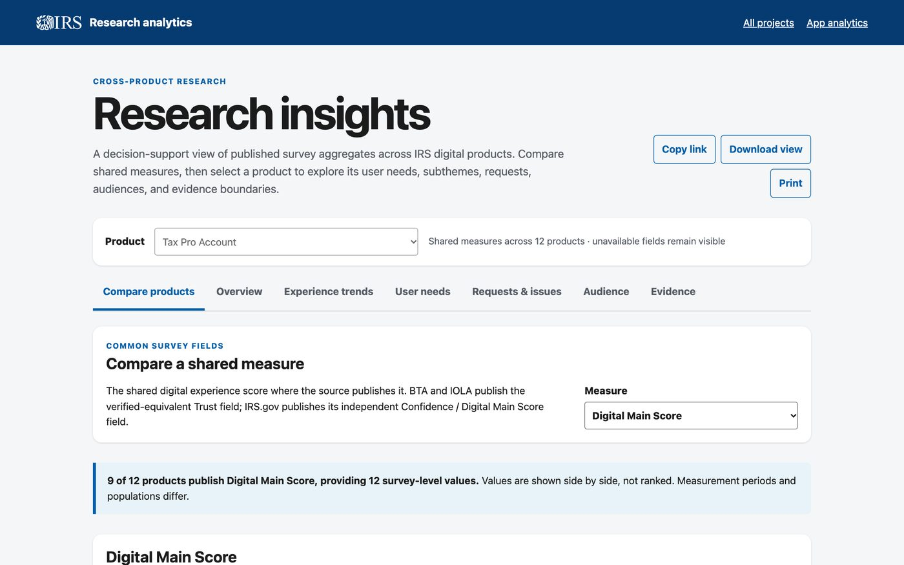
The research insights dashboard is rebuilt from the catalog, never edited by hand.
cd design-prototypes
git pull --ff-only
python3 research-analytics/tools/build-data.py --catalog-root ../research-hub/survey-research-catalog
python3 research-analytics/tools/build-data.py --catalog-root ../research-hub/survey-research-catalog --check
Research analytics checked: 12 products
PLAYWRIGHT=/path/to/playwright/index.mjs node research-analytics/tools/qa.mjs
PLAYWRIGHT=/path/to/playwright/index.mjs node research-analytics/tools/capture.mjs
git add research-analytics && git commit -m "Refresh research insights data" && git pushGitHub Pages republishes in a few minutes. Open the live page and check the as-of date.
git switch codex/multisurvey-onboarding-2026-10-18) or the refresh stops with a survey_id error. The check above passed against that branch on November 1.To change what the dashboard shows rather than refresh it, edit app.js and style.css, run the same checks, and post before and after captures in #design-reviews.
5Automate research reviews and tag people for feedback
A monitor runs every three hours. It looks for new or changed prototypes in design-prototypes, reviews up to three against Research Hub evidence, and prepares a UX Research SME review for each. Every review is marked as an automated first pass, not human SME approval.
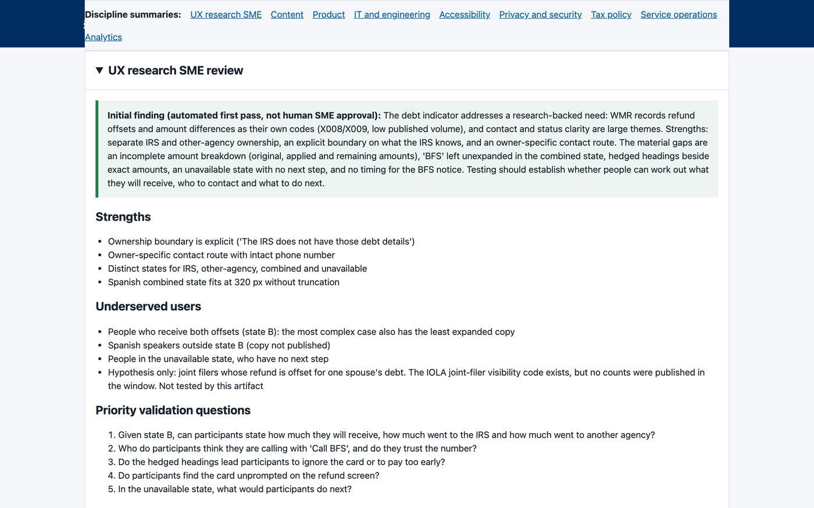
Publish a review and tag owners
- Ask the agent to publish it. It becomes a page in the prototype's
design-review/folder, with each finding's evidence, limits and test questions. - Design changes are tagged to @Hai-RS and content changes to @annie-content, on the prototype's feedback issue.
- Nothing that notifies someone goes out between 9pm and 8am Eastern. Tags written overnight are held and posted at 8am.
Doing it yourself on GitHub
# Comment on a feedback issue and tag owners
cat > tag.md <<'EOF'
@Hai-RS, this needs a design change:
- rsme-01 (High): show a breakdown of the refund, the offset and the amount still coming
@annie-content, this needs a content change:
- rsme-02 (Medium): spell out "Bureau of the Fiscal Service (BFS)" in every state
Review: https://taxpayer-services-and-online-accounts.github.io/design-prototypes/refund-debt-review/design-review/
EOF
gh issue comment 2686 -R Taxpayer-Services-and-Online-Accounts/expo-irs --body-file tag.md
# Ask for review on a pull request
gh pr edit 483 -R Taxpayer-Services-and-Online-Accounts/research-hub --add-reviewer <github-login>
# Find what's waiting on you
gh search issues --mentions @me --state openWrite each finding as one line: its ID, priority, and the change. Link the review so people can see the evidence.